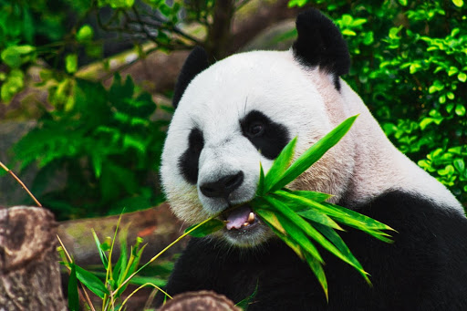
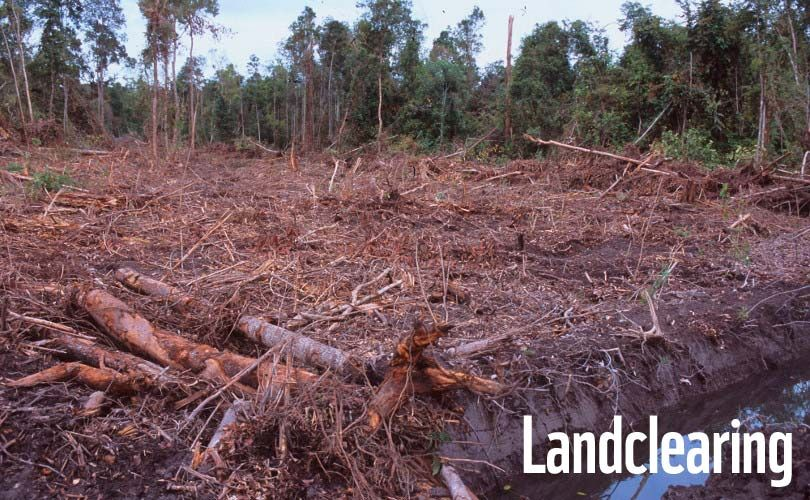

A panda's diet consists of bamboo shoots and leaves. It makes up 99% of their diet. The other 1% is filled by other plants, fish, and bugs. Pandas spend about 12 hours each day eating. Bamboo is not very nutritious and since it is the main part of their diet, pandas need to eat a lot of it. Pandas also eat very fast. Also, the shape of the teeth of a panda helps the panda eat bamboo. Their teeth are flat and broad. They also have a specific way of holding the bamboo. According to kids.nationalgeographic.com, "To get the bamboo to their mouths, they hold the stems with their front paws, which have enlarged wrist bones that act as thumbs for gripping." Here is a video of a Giant Panda eating bamboo.
Giant Panda used to be endangered, but fortunately they are slowly making their rise, as their status has bumped up to vulnerable(which is a step up above endangered). It is important that the Giant Pandas population does not decline. Giant Pandas offer protection to other species in their habitat. If the pandas were to become extinct, it would have a negative impact on the other animals. Giant Pandas also benefit us humans. As reported by worldwildlife.org, "Pandas also bring sustainable economic benefits to many local communities through ecotourism." Pandas also do not reproduce frequently, so it is harder for them to recover their population. They also face habitat destruction. Here is a picture of the destruction in the Giant Panda's habitat:
This pushes them into less habitable areas and it destroys their food supply. All of these reasons make Giant Pandas vulnerable.
Giant Pandas need all the help they can get, and luckily there are many ways to help. You can donate or adopt a panda from worldwildlife.org. Here you can buy many kits and gifts. They are not only a way to buy adorable gifts, but the money you pay will be donated to World Wild Life(WWF). The World Wild Life also has action centers in which people can speak up for endangered animals.